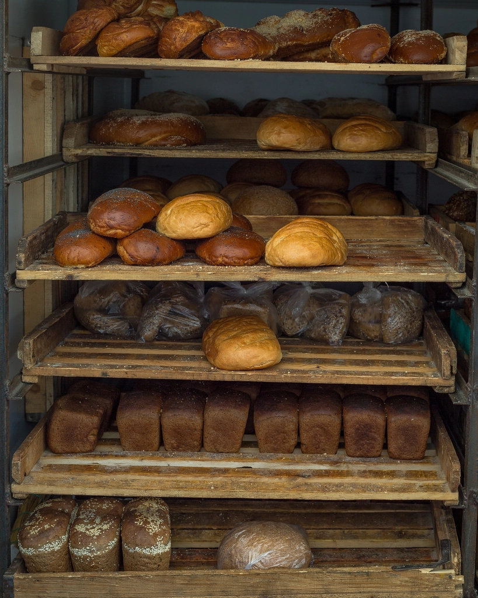

お店のこだわり

小さなお店だからこそ
店内はとてもこじんまりとしていて、3〜4人ほど入るといっぱいになってしまう広さです。けれど、その小ささこそが、お一人お一人のベーグル選びにじっくりと向き合える時間を生んでいます。たくさんの中からどれを選ぶか迷う、その時間もどうぞ楽しんでください。
※写真はイメージです(仮素材)

ゆったりとした午後の時間
パンと惣菜 TABERUは、朝から慌ただしく開くお店ではなく、午後からゆったりと一日を始めるスタイルで営んでいます。穏やかな午後の光とともに過ごす、そんな独自のペースが当店らしさです。
※営業時間の詳細はお問い合わせください。
※写真はイメージです(仮素材)

店主の人柄
生地を一つひとつ手をかけてこねる、その丁寧な仕事ぶりにも人柄が表れています。ご来店いただいたお客様からは、店主の温かく愛想のよい接客について、たびたびお声をいただいています。小さなお店だからこそできる、一人ひとりとの会話も大切にしています。
※写真はイメージです(仮素材)